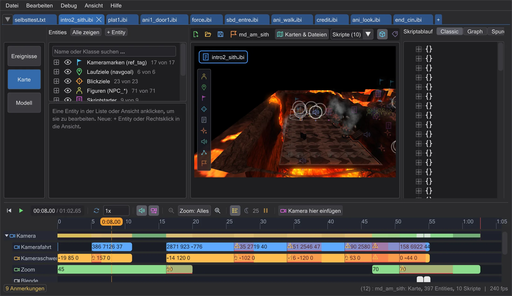

Einstieg
Das Fenster
Ein Fenster, drei Modi. Die Modusleiste links entscheidet, was die große Fläche zeigt; Skript, Karte und Zeitleiste sprechen immer miteinander.

Die Bereiche#
| Bereich | Wofür |
|---|---|
| Menüleiste | Datei, Bearbeiten, Debug, Ansicht, Hilfe - öffnen und speichern, Spielordner, Aussehen und Sprache, das Handbuch. |
| Skript-Reiter | Ein Reiter je offenem Skript. Ein * heißt: ungespeicherte Änderungen, + öffnet ein neues Skript, Reiter lassen sich umsortieren. Alle Reiter einer Mission teilen sich Karte und Kamera. |
| Modusleiste | Der Streifen ganz links: Ereignisse (Skripte bauen), Karte (die Karte in 3D), Modell (ein Figurenmodell ansehen). |
| Linke Spalte | Hängt vom Modus ab: die Liste der Befehle, die Entities der Karte mit ihrem Inspektor oder die Animationen eines Modells. |
| Skriptablauf | Das Skript selbst - als Baum (Classic), als Graph (Graph) oder über die Zeit (Spuren). Siehe Script Flow: Classic, Graph, Spuren. |
| Aktionen | Die Knopfspalte rechts, wie im Original: bearbeiten, Datei, Baumoptionen, Übersetzen!. Im Map-Modus macht sie der Karte Platz. |
| Zeitleiste | Unter der Karte: spielt die Szene ab und zeigt jeden Befehl in der Zeit. Siehe Zeitleiste. |
| Statuszeile | Meldungen, die Zähler für Fehler und Hinweise (anklicken zeigt die Liste), der Rückgängig-Verlauf und wann das Skript zuletzt übersetzt wurde. |
Zwei Skripte nebeneinander#
Datei → Geteilte Ansicht zeigt im Events-Modus bis zu vier Skripte nebeneinander - zum Vergleichen und zum Herüberkopieren von Befehlen. Einen Befehl von einem Feld ins andere ziehen kopiert ihn; in ein Feld klicken, um darin zu arbeiten.
Größe, Aussehen und Aufteilung#
- Strg + Mausrad skaliert die ganze Oberfläche (50 - 300 %); Ansicht → Bedienoberfläche skalieren tut dasselbe.
- Ansicht → Farbgebung: BehavEd klassisch, Windows, Dunkel, Mitternacht, Hell, Hoher Kontrast.
- Die Grenzen zwischen den Spalten ziehen ändert ihre Breite; jeder Modus merkt sich seine. Debug → Aufteilung zuruecksetzen stellt alles zurück.
- Eine Datei im Explorer öffnen, während BehavEd-Remake läuft, reicht sie an das offene Fenster weiter, statt ein zweites Programm zu starten.